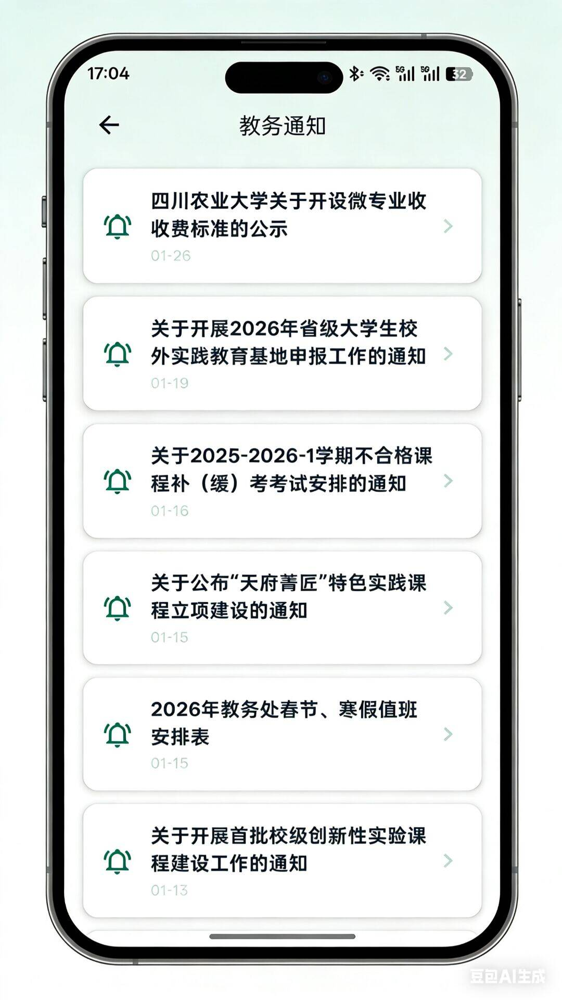
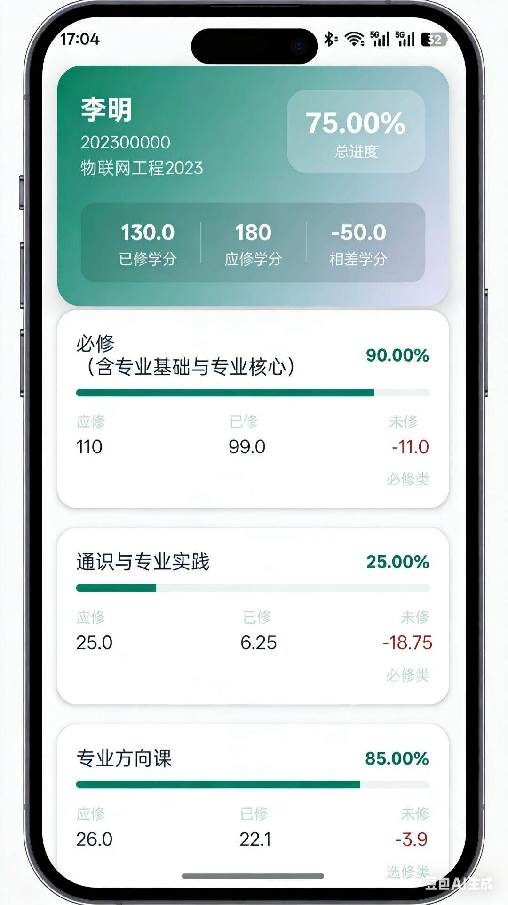
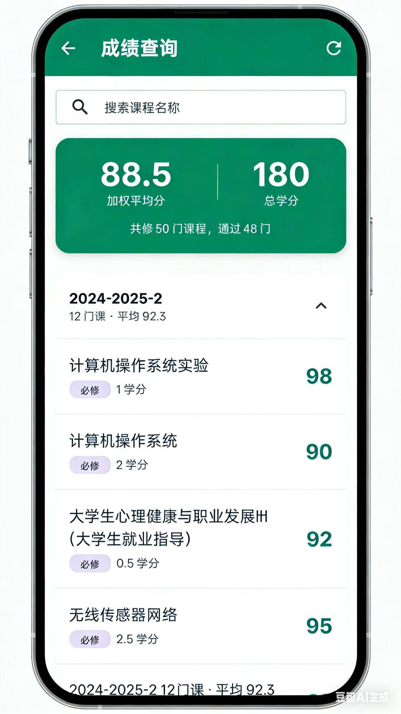
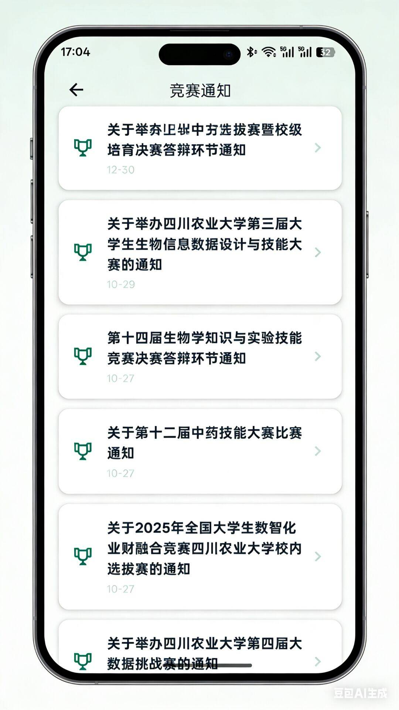
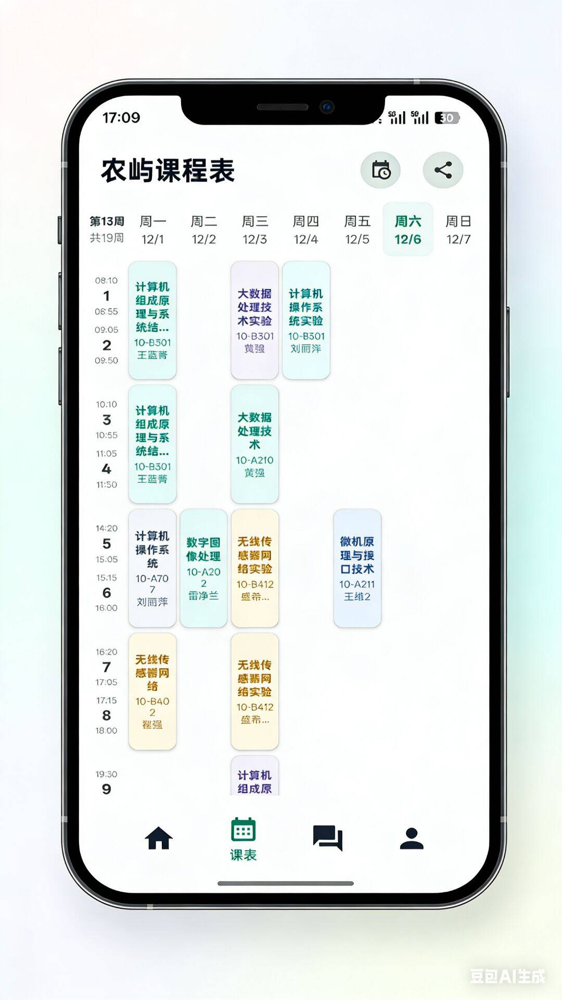
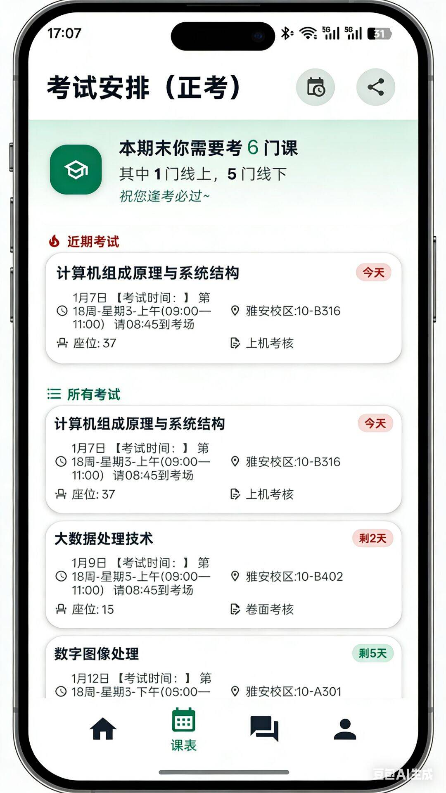
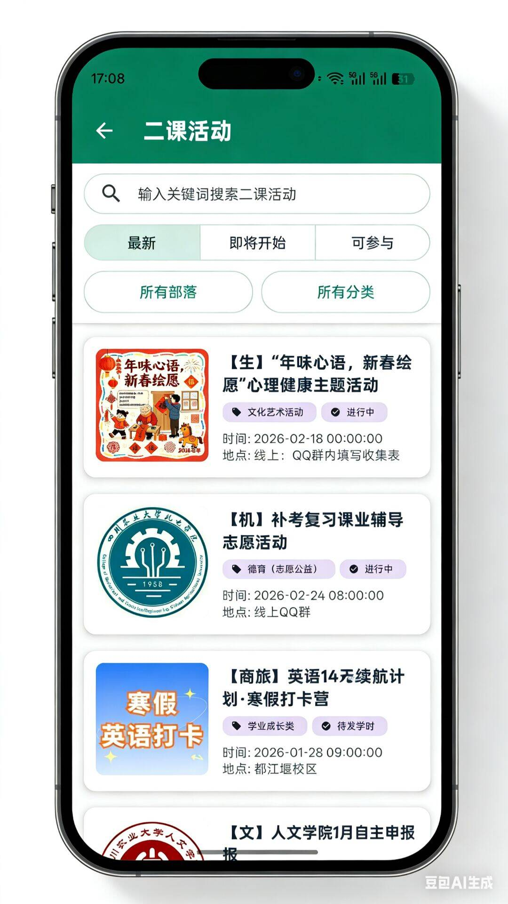
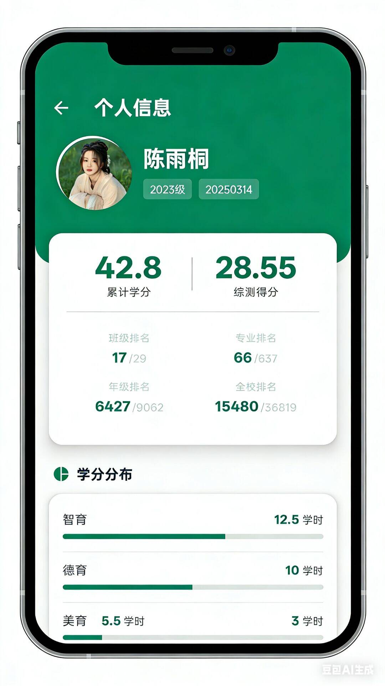
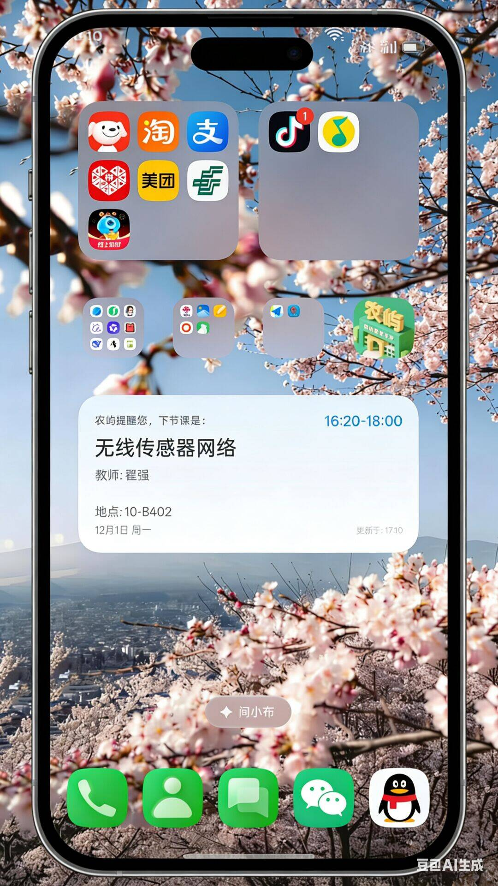
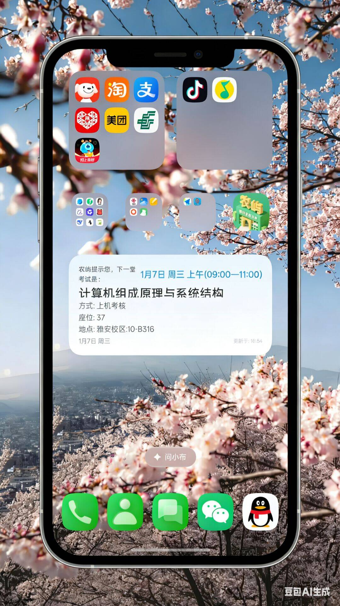

目前有三套主题可选，分别是川农新绿（默认主题，贴合川农形象）、暗夜模式（夜间使用不伤眼）、樱花浅粉（为女性用户设计，也包括部分如开发者在内的男性用户）
暗夜深黑
川农新绿（默认）
樱花浅粉
想要更多主题可联系农屿开发者，联系方式见网页底部
想查教务信息不再需要每次都进入教务网以及服务不稳定的川农微教务啦，来农屿，重要教务信息便捷查询！
教务网首页最新通知抓取，点击即可跳转

清晰直观的查看学分修读进度，一目了然

快速查询各科成绩与绩点，支持按课程名称搜索

教务网发布的竞赛通知都在这里，同样可点击跳转

支持自定义日程和课程，同时人性化地加入课程考勤记录功能，清晰记录课程出勤情况，另外增加课程待办事项，课程作业直接记录，再也不怕忘记啦

考试时间地点倒计时，助你从容应考，再也不用打开教务网查看考试时间了

我们的初衷并非替代i川农，只是为你提供了更便捷的二课信息查询入口，同时也设计了更好看的用户界面
浏览并报名感兴趣的二课活动

实时查看二课分数与排名，了解二课分获取情况

精美的桌面小组件，无需打开 App 即可查看课程与考试信息
实时显示今日将要上的课程

实时显示最近的一场考试信息

一群热爱技术的川农人，为更好的校园生活而努力。
农屿的核心开发者（笔者）是一名23级信工学子，早在大一刚入学那时，就对川农各类分散的信息查询渠道深恶痛绝，一直希望能够有一个统一的平台，将所有重要信息整合起来，方便川农的同学查询。在以前，我们查教务信息主要有两大渠道，一是打开浏览器登录教务网，二是打开微信搜索公众号“川农微教务”，而获取二课活动和成绩信息又得下载i川农，另外，最重要的课表功能居然要使用诸如“超级课程表”这样严重商业化，充斥着各类广告的三方平台，相信很多同学都在查课表时不小心手摇了一下就跳转到其他app中了.......总而言之，包括我在内的广大川农学子都苦这种现状久矣，于是，农屿应运而生，虽然农屿的种子早就萌芽了，奈何本人直到现在才有足够的技术和充裕的时间来开发出农屿app，无妨，种一棵树最好的时间是在十年前，其次是现在！
农屿团队目前只是一个3人小队，笔者作为核心开发者负责app客户端代码编写和后台服务端代码编写，另有一名23级计科同学负责协助app的IOS端适配，最后就是一名23级大数据同学负责运营工作。如您所见，团队的规模很小，但我们依然尽自己最大的能力来做好这样一个app。如果您对软件开发技术有兴趣，欢迎加入农屿团队，和我们一起维护、迭代农屿app，值得一提的是，目前农屿团队的成员均来自信息工程学院下辖的iot全栈开发工作室，也欢迎您加入我们工作室；另外，除了软件开发，我们也希望农屿团队能够加入其他专业的同学，包括但不限于UI设计（负责提高农屿审美，目前的审美已经是一个理工男的极限了）、公众号运营（负责编写农屿微信公众号的帖子）、农屿管理员（在将来开通广场模块后负责用户帖子审核等等工作）......农屿团队的联系方式见网页底部
笔者曾读过一句诗，写自英国诗人约翰多恩，它是这样的”没有谁是一座孤岛，在大海里独踞；每个人都像一块小小的泥土，连接成整个陆地。“这很契合农屿的理念，无论是各类信息还是每位川农学子，都不应该是分散的岛屿，而应该是一个连接在一起的一整片大陆。因此，我们给app取了“农屿”的名字，寓意着“在川农，我们都不是孤独的岛屿”。